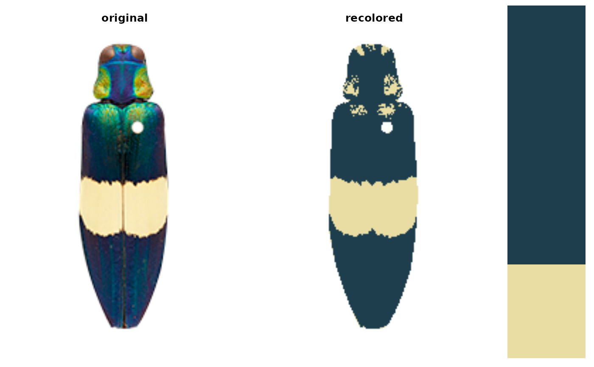

Run pavo's adjacency and boundary strength analysis on a recolorize object
Source: R/recolorize_adjacency.R
recolorize_adjacency.RdRun adjacency (Endler 2012) and boundary strength (Endler et al. 2018)
analysis directly on a recolorize object, assuming a human viewer
(i.e. using CIE Lab and HSL color distances that correspond to
perceptual distances of human vision). This is achieved by
converting the recolorize object to a pavo::classify object,
converting the colors to HSL space, and calculating a pavo::coldist object
for CIE Lab color space before running pavo::adjacent.
Arguments
- recolorize_obj
A
recolorizeobject.- xscale
The length of the x-axis, in preferred units. Passed to pavo::adjacent.
- coldist
A pavo::coldist object; otherwise, this argument is ignored and a
coldistobject for human vision is calculated from RGB colors converted to CIE Lab using cielab_coldist.- hsl
A dataframe with
patch,hue,satandlumcolumns specifying the HSL values for each color patch, to be passed to pavo::adjacent. Otherwise, this argument is ignored and HSL values are calculated for human vision from the RGB colors in therecolorizeobject.- ...
Further arguments passed to pavo::adjacent.
Value
The results of pavo::adjacent; see that documentation for the meaning of each specific value.
Details
Eventually, the plan is to incorporate more sophisticated color models than using human perceptual color distances, i.e. by allowing users to match color patches to spectra. However, this does return reasonable and informative results so long as human vision is an appropriate assumption for the image data.
Examples
img <- system.file("extdata/chongi.png", package = "recolorize")
recolorize_obj <- recolorize(img, method = "k", n = 2)

recolorize_adjacency(recolorize_obj)
#> Using single set of coldists for all images.
#> Using single set of hsl values for all images.
#> k N n_off p_1 p_2 p_3 q_1_1 q_1_2 q_2_2
#> 3 40364 1340 0.5150934 0.1287119 0.3561947 0.5041869 0.003121593 0.1186701
#> q_1_3 q_2_3 q_3_3 t_1_2 t_1_3 t_2_3 m m_r
#> 0.011099 0.01897731 0.3439451 0.09402985 0.3343284 0.5716418 2.964602 3.50885
#> m_c A Sc St Jc Jt B Rt
#> 2.420354 1.449726 2.446408 2.235179 0.8154692 0.7450598 0.3134328 0.4473914
#> Rab m_dS s_dS cv_dS m_dL s_dL cv_dL m_hue s_hue
#> 1 31.90773 17.47305 0.547612 62.60339 23.13469 0.3695437 0.5307585 1.605562
#> var_hue m_sat s_sat cv_sat m_lum s_lum cv_lum
#> 0.7244305 0.2508135 0.3565633 1.421627 0.6910565 0.4721701 0.6832583